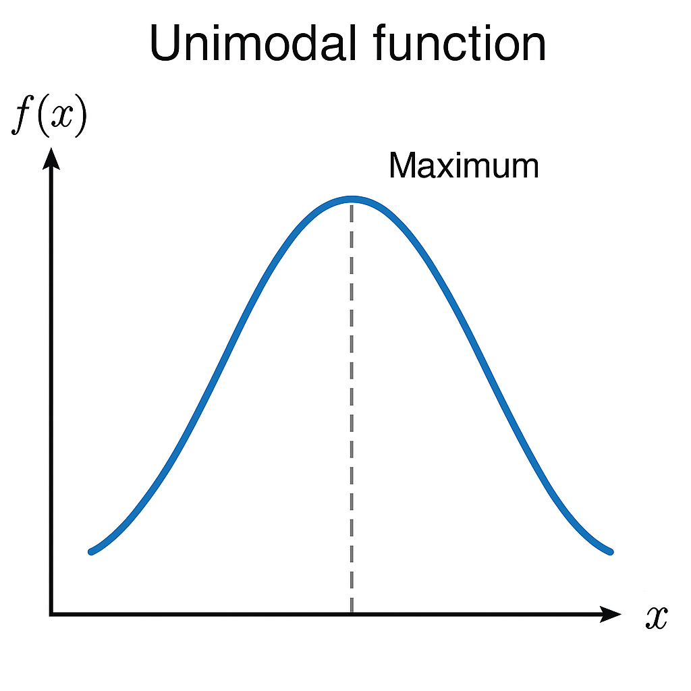

When performing binary or ternary search on floating-point values, we can't rely on exact equality due to precision limitations of floating-point numbers.
Instead of checking lo <= hi, we check whether the difference between lo and hi is within a small acceptable range (called epsilon or eps).
while (fabs(hi - lo) > eps) means:
eps.fabs?
fabs(x) is the floating-point absolute value function in C++. It ensures we’re comparing the absolute difference between hi and lo, regardless of which is larger.
eps:1e-6, 1e-7, 1e-9eps → more precision but slower convergence
double eps = 1e-9;
while (fabs(hi - lo) > eps) {
double mid = (lo + hi) / 2;
if (f(mid)) {
hi = mid;
} else {
lo = mid;
}
}
// lo and hi are now close enough to be considered equal
Sometimes, we cannot outright eliminate one half of the search space. For example, when trying to find the minimum of a parabolic or unimodal function, we can't directly apply binary search. Instead, we divide the range into three parts and eliminate the portion that cannot contain the minimum.
Here’s a visualization of such a function:

double ternarySearch(double l, double r) {
while (r - l > 1e-9) {
double m1 = l + (r - l) / 3;
double m2 = r - (r - l) / 3;
if (f(m1) > f(m2)) {
r = m2;
} else {
l = m1;
}
}
return l; // or (l + r) / 2
}
double f(double x) {
return (x - 2) * (x - 2) + 3; // a simple parabola with minimum at x = 2
}